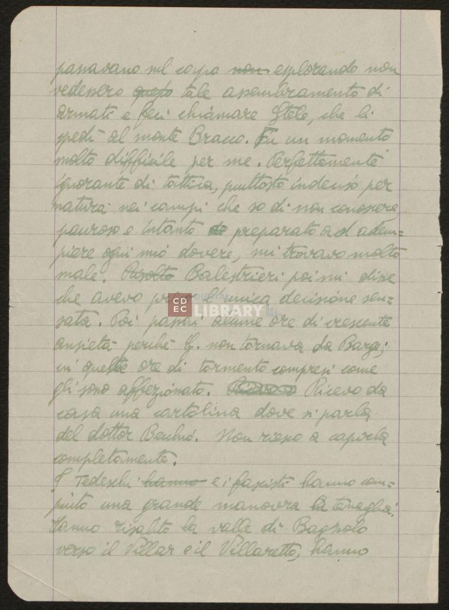
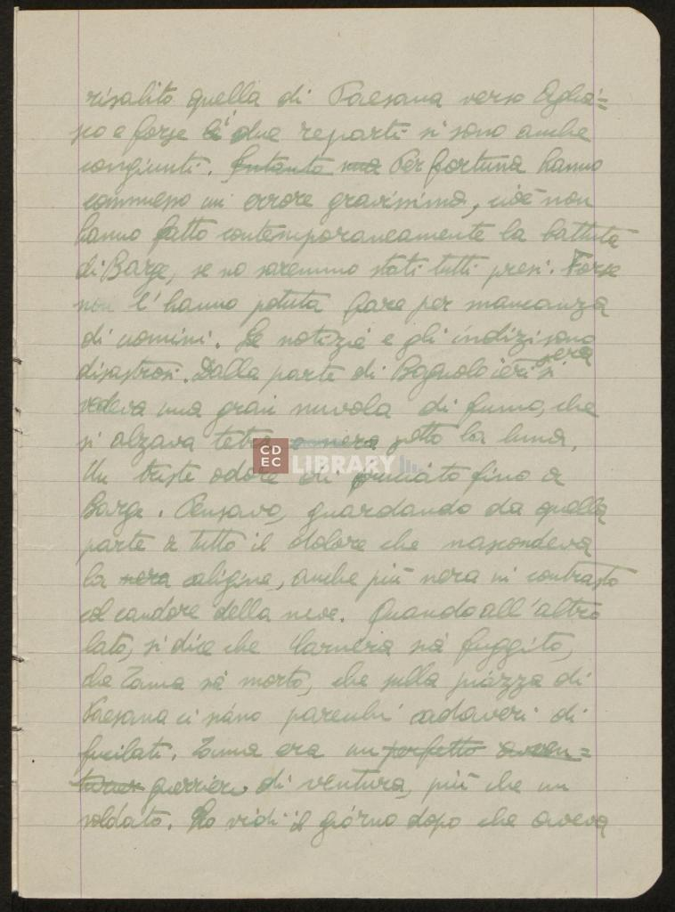
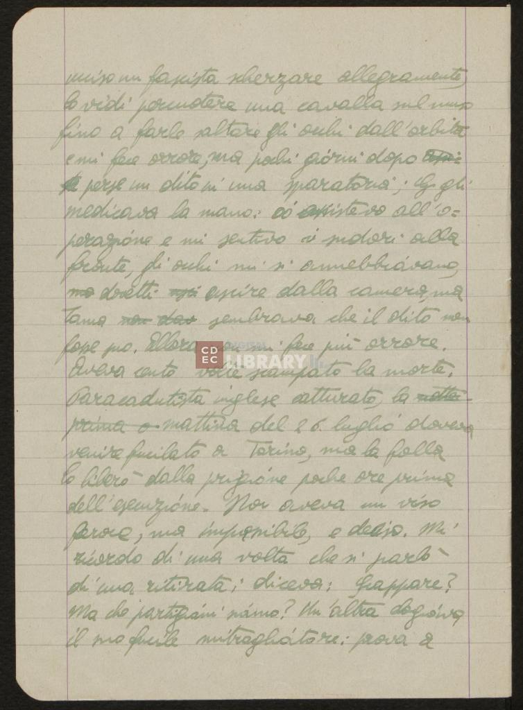
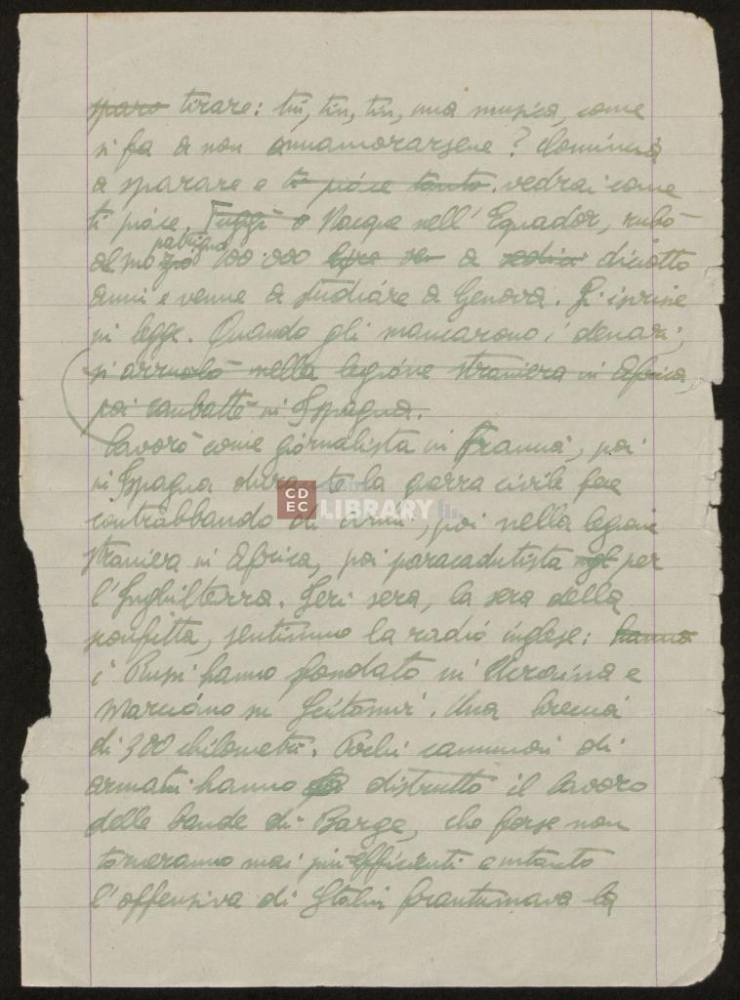
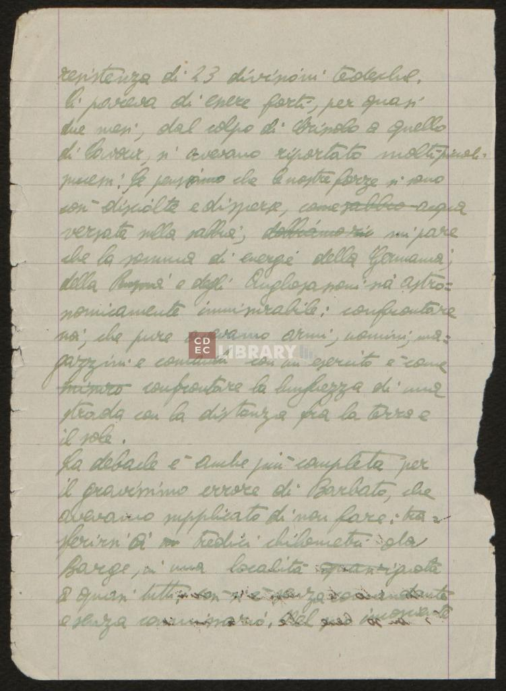
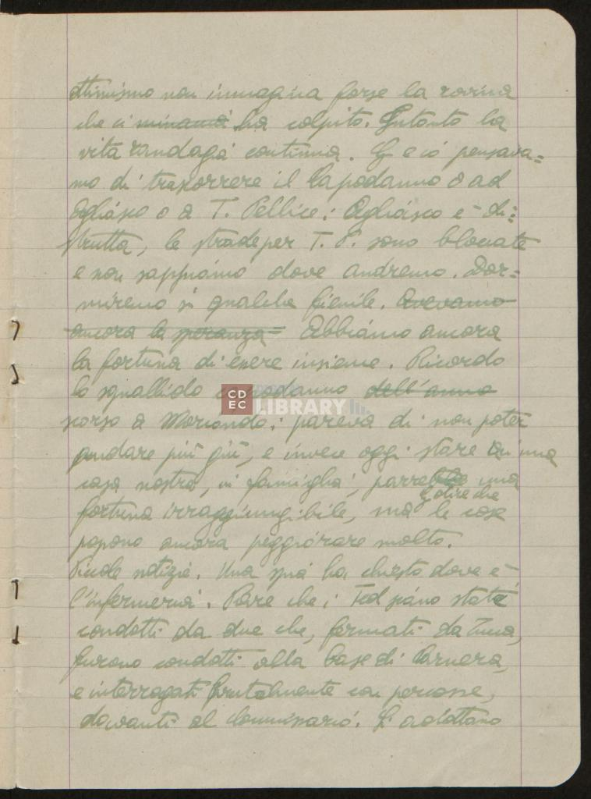

Diari di un partigiano ebreo
di Emanuele Artom (1915-1944)
Informazioni editoriali
Informazioni di pubblicazione
Informazioni sulla conservazione
Informazioni sul manoscritto
Edizione Digitale -
2008
Progetto sotto la guida di: Angelo Mario Del Grosso
Codifica del file realizzata da: Sara Guglielmi - Alissia Biliotti - Marco Bertolucci
Opera digitale consultabile presso Università di Pisa
Opera ad accesso libero- 2023
L'opera originale è conservata presso l'archivio della Fondazione Archivio del CDEC (Centro di Documentazione Ebraica Contemporanea), a Milano (Italia)
Le pagine del manoscritto si presentano in gran parte leggibili. Sono presenti alcune
cancellature, sostituzioni e aggiunte, alcune pagine sono danneggiate ai bordi, altre
sono realizzate con carta molto sottile che ha condizionato negativamente la qualità
delle scannerizzazioni
Modalità di acquisizione: donato da Amalia Artom e digitalizzato e distribuito da CDEC
| Supporto: |
Fogli di carta |
| Numero pagine: |
174 fogli |
| Layout pagine: |
Le pagine hanno dalle 22 alle 35 righe
|
| Produzione risorsa: |
I documenti cartacei sono interamente prodotti a mano da Emanuele Artom |
| Lingua: |
Italiano |

1 ➛
Passavano sul capo non esplorando
2 ➛
non vedessero questo tale assembramento di
3 ➛
armati e feci chiamare Stele, che li
4 ➛
spedì al monte “Brano”. Fu un momento
5 ➛
molto difficile per me. Perfettamente
6 ➛
ignorante di tattica, piuttosto indeciso per
7 ➛
natura nei campi che so di non conoscere
8 ➛
pauroso e intanto preparato ad ademp=
9 ➛
iere ogni mio dovere, mi trovavo molto
10 ➛
male. Risolto Balestrieri poi mi disse
11 ➛
che avevo preso l'unica decisione sen=
12 ➛
sata. Poi passai alcune ore di crescente
13 ➛
ansietà perché G. non tornava da Barga;
14 ➛
in queste ore di tomento compresi come
15 ➛
gli sono affezionato. Ricevo da
16 ➛
casa una cartolina dove si parla
17 ➛
del dottor Berluò. Non riesco a capirla
18 ➛
completamente.
19 ➛
I Tedeschi hanno e i fascisti hanno comp=
20 ➛
iuto una grande manovra a tenaglia.
21 ➛
Hanno risalito la valle di Bagnolo
22 ➛
verso il Villar e il Villaretto, hanno

1 ➛
risalito quella di Paesana verso Aglia=
2 ➛
sco e forse le i due reparti si sono anche
3 ➛
congiunti. intantouna Per fortuna hanno
4 ➛
commesso un errore gravissimo, cioè non
5 ➛
hanno fatto contemporaneamente la battuta
6 ➛
di Barga, se no saremmo stati tutti presi. Forse
7 ➛
non l'hanno potuta fare per mancanza
8 ➛
di uomini. Le notizie e gli indizi sono
9 ➛
disastrosi. Dalla parte di Bagnolo ieri si
10 ➛
vedeva una gran nuvola di fumo, che
11 ➛
si alzava tetra e nera sotto la luna.
12 ➛
Un triste odore di bruciato fino a
13 ➛
Barga. Pensavo, guardando da quella
14 ➛
a tutto il dolore che nascondeva
15 ➛
la nera aligina, anche più nera in contrasto
16 ➛
con candore della neve. Quando all'altro
17 ➛
lato, si dice che Carnera sia fuggito,
18 ➛
che Zanna sia morto, che sulla piazza di
19 ➛
Paesana ci siano parecchi cadaveri di
20 ➛
fucilati. Zanna era un perfetto
avven=
21 ➛
turier guerriero di ventura, più che un
22 ➛
soldato. Lo vidi il giorno dopo che aveva

1 ➛
ucciso un fascista scherzare allegramente,
2 ➛
lo vidi percuotere una cavalla sul muso
3 ➛
fino a farle saltare gli occhi dall'orbita
4 ➛
e mi fece orrore, ma pochi giorni dopo
5 ➛
perse un dito in una sparatoria; G. gli
6 ➛
medicava la mano: io assistevo all'o=
7 ➛
perazione e mi sentivo i sudori alla
8 ➛
fronte, gli occhi mi si annebbiavano,
9 ➛
ma dovetti usci uscire dalla camera, ma
10 ➛
Zanna non dav sembrava che il dito non
11 ➛
fosse suo. Allora non mi fece più orrore.
12 ➛
Aveva cento volte scampato la morte.
13 ➛
Paracadutista inglese catturato, la notte
14 ➛
prima o mattina del 26 luglio doveva
15 ➛
venire fucilato a Torino, ma la folla
16 ➛
lo liberò poche ore prima
17 ➛
dell'esecuzione. Non aveva un viso
18 ➛
feroce, ma impassibile, e deciso. Mi
19 ➛
ricordo di una volta che si parlò
20 ➛
di una ritirata; diceva: Scappare?
21 ➛
Ma che partigiani siamo? Un'altra elogiava
22 ➛
il suo fucile mitragliatore: prova a

1 ➛
spara tirare: tin, tin, tin, una musica, come
2 ➛
si fa a non innamorarsene? comincia
3 ➛
a sparare e ti piace tanto. vedrai come
4 ➛
ti piace. Fuggì a Nacque nell'Equador, rubò
5 ➛
al suo zio patrigno 100'000 lire x a sedici diciotto
6 ➛
anni e venne a studiare a Genova. S'iscrisse
7 ➛
in legge. Quando gli mandarono i denari,
8 ➛
si arruolò nella legione straniera in Africa,
9 ➛
poi combattè in Spagna.
10 ➛
lavorò come giornalista in Francia, poi
11 ➛
in Spagna durante la guerra civile fece
12 ➛
contrabbando di armi, poi nella legione
13 ➛
straniera in Africa, poi paracadutista ingl per
14 ➛
l'Inghilterra. Ieri sera, la sera della
15 ➛
sconfitta, sentimmo la radio inglese: hanno
16 ➛
i Russi hanno sfondato in Ucraina e
17 ➛
marciano su Scitomir. Una breccia
18 ➛
di 300 chilometri. Pochi cannoni di
19 ➛
armati hanno distrutto il lavoro
20 ➛
delle bande di Barga, che forse non
21 ➛
torneranno mai più efficienti e intanto
22 ➛
l'offensiva di Stalin frantumava la

1 ➛
resistenza di 23 divisioni tedesche.
2 ➛
Ci pareva di essere forti, per quasi
3 ➛
due mesi, dal colpo di Crissolo a quello
4 ➛
di Cavour, si avevano riportato molti piccoli
5 ➛
successi. Se pensiamo che le nostre forze si sono
6 ➛
così disciolte e disperse, come sabbia acqua
7 ➛
versata sulla sabbia;dobbiamo ric mi pare
8 ➛
che la somma di energie della Germania;
9 ➛
della Russia e degli Anglosassoni sia astro=
10 ➛
nomicamente immisurabile: confrontare
11 ➛
noi, che pure avevamo armi, uomini, ma=
12 ➛
gazzini e comandi con un esercito è come
13 ➛
misura confrontare la lunghezza di una
14 ➛
strada con la distanza fra la terra e
15 ➛
il sole.
16 ➛
La debacle è anche più completa per
17 ➛
il gravissimo errore di Barbato, che
18 ➛
avevamo supplicato di non fare:tra=
19 ➛
sferirsi a tredici chilometri da
20 ➛
Barga. In una località quasi ignota
21 ➛
a quasi tutti;non si è senza comandante e
22 ➛
senza commissario. Nel più importante

1 ➛
attivismo non immagina forse la rovina
2 ➛
che ci minaccia ha colpito. Intanto la
3 ➛
vita randagia continua. G. e io pensava=
4 ➛
mo di trascorrere il Capodanno o ad
5 ➛
Agliasco o T. Pellice: Agliasco è di=
6 ➛
strutta, le strade per T. P. sono bloccate
7 ➛
e non sappiamo dove andremo. Dor=
8 ➛
miremo in qualche fienile. Avevamo
9 ➛
ancora la speranza Abbiamo ancora
10 ➛
la fortuna di essere insieme. Ricordo
11 ➛
lo squallido Capodanno dell'anno
12 ➛
scorso a Moriondo: pareva di non poter
13 ➛
andare più giù, e invece oggi stare in una
14 ➛
casa nostra, in famiglia, parrebbe una
15 ➛
fortuna irraggiungibile, ma G. dice che le cose
16 ➛
possono ancora peggiorare molto.
17 ➛
Piccola notizia. Una spia ha chiesto dove è
18 ➛
l'infermeria. Pare che i Ted siano stati
19 ➛
condotti da due che, fermati da Zanna,
20 ➛
furono condotti alla base di Carnera,
21 ➛
e interrogati brutalmente con percosse,
22 ➛
davanti al commissario. Lì adottano